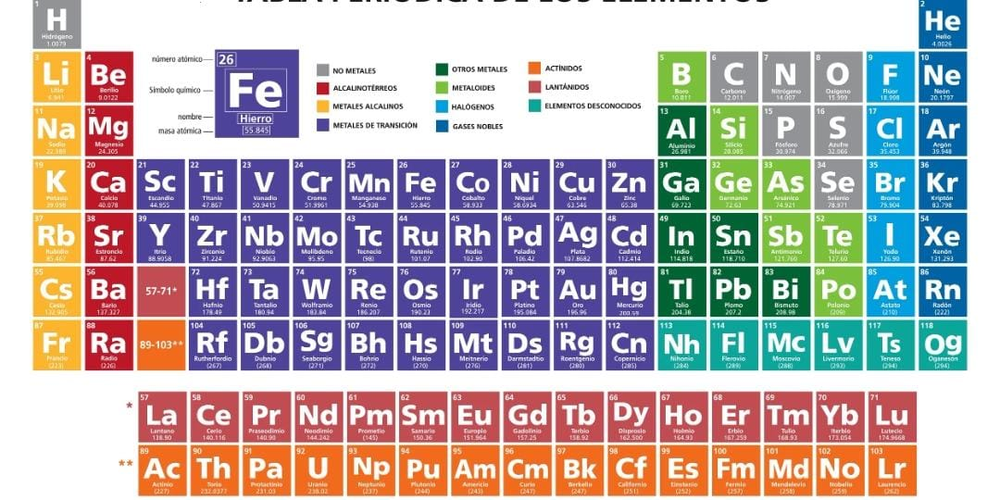

SIMBOLO QUIMICO
Qué es un símbolo químico
El símbolo químico es una abreviatura del nombre de cada elemento químico descubierto y expresado en la tabla periódica.
Un elemento químico es un tipo de materia que se clasifica básicamente por el número atómico o cantidad de protones, su símbolo químico, el nombre del elemento y su masa atómica.
La tabla periódica ordena los elementos químicos en una tabla según su número atómico, configuración de electrones y propiedades químicas.
TABLA PERIODICA DE LOS ELEMENTOS

Los símbolos químicos ayudan a que todas las personas, independiente del idioma que utilicen, logren identificar el elemento según el símbolo universal químico.
Los símbolos de algunos de los elementos químicos más conocidos son:
H para hidrógeno
Cu para cobre
He para helio
P para fósforo
Ag para plata
S para azufre
N para nitrógeno
Cl para cloro
Ca para calcio
O para oxígeno
Au para oro
Fe para hierro
Na para sodio
K para potasio
Ne para neón
C para carbono
Los símbolos químicos también son usados para abreviar los elementos que componen una determinada materia. Por ejemplo, el agua es compuesto por dos átomos de hidrógeno y uno de oxígeno, por lo que lleva el símbolo químico de H2O.
INICIO